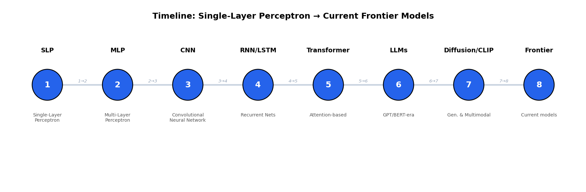

1Diffusion Models
Goes beyond noising/denoising alone — the goal is real intuition for why the process works the way it does.
Pasting isn't allowed here — please type your answer.
Pasting isn't allowed here — please type your answer.
I realize it's hard to type down a formula, and I don't expect you to — but it will be to your benefit if you were to understand the math behind how the noise schedule (the exact balance between signal and noise at each step) is actually defined.
Pasting isn't allowed here — please type your answer.
2LLM Evolution & Multimodal Models
Pasting isn't allowed here — please type your answer.
Pasting isn't allowed here — please type your answer.
Pasting isn't allowed here — please type your answer.
Pasting isn't allowed here — please type your answer.
Pasting isn't allowed here — please type your answer.
3The Full Timeline
Below is a timeline from the very first neural network model to today's frontier models. Look at the diagram, then fill in each transition below describing what changed and why.

1 → 2: SLP → MLP
What was the key limitation of the Single-Layer Perceptron?
Pasting isn't allowed here — please type your answer.
What did the Multi-Layer Perceptron add to address it?
Pasting isn't allowed here — please type your answer.
2 → 3: MLP → CNN
What was inefficient about using a plain MLP on image data?
Pasting isn't allowed here — please type your answer.
What did the CNN add to address it?
Pasting isn't allowed here — please type your answer.
3 → 4: CNN → RNN/LSTM
What kind of data does a CNN struggle to handle well?
Pasting isn't allowed here — please type your answer.
What did RNN/LSTM add to address it?
Pasting isn't allowed here — please type your answer.
4 → 5: RNN/LSTM → Transformer
What was the core limitation of RNN/LSTM, even with gating mechanisms?
Pasting isn't allowed here — please type your answer.
What did the Transformer add to address it?
Pasting isn't allowed here — please type your answer.
5 → 6: Transformer → LLMs (GPT/BERT-era)
What was still missing after the original Transformer paper (which was built for translation)?
Pasting isn't allowed here — please type your answer.
What changed to produce modern general-purpose LLMs?
Pasting isn't allowed here — please type your answer.
6 → 7: LLMs → Diffusion Models / CLIP
What could text-only LLMs not do, that Diffusion/CLIP-era models addressed?
Pasting isn't allowed here — please type your answer.
What did this generation of models add?
Pasting isn't allowed here — please type your answer.
7 → 8: Diffusion/CLIP → Current Frontier Models
What is the current frontier generation of models generally moving toward, relative to the previous generation?
Pasting isn't allowed here — please type your answer.